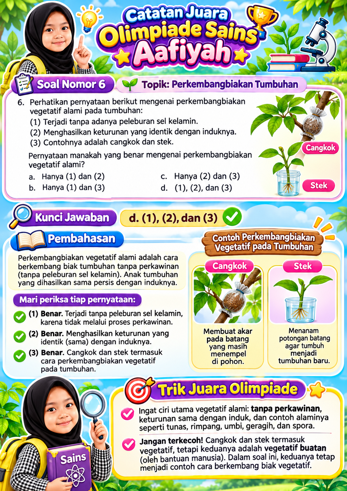

🧠 Pembahasan Soal Nomor 06
Perkembangbiakan Vegetatif pada Tumbuhan

⚠️ KOREKSI KUNCI JAWABAN PADA GAMBAR: gambar terlampir menampilkan pilihan D, tetapi itu tidak sesuai dengan konsep pada pernyataan (3). Cangkok dan stek adalah vegetatif buatan, bukan vegetatif alami. Jadi, untuk pertanyaan “Pernyataan manakah yang benar mengenai perkembangbiakan vegetatif alami?”, jawaban yang benar adalah A — hanya (1) dan (2).
⭐ Ingat jebakan olimpiade: vegetatif berarti tanpa peleburan sel kelamin. Untuk membedakan alami dan buatan, perhatikan apakah teknik perbanyakan itu berlangsung secara alami atau dilakukan dengan bantuan manusia. Cangkok dan stek tetap vegetatif, tetapi termasuk vegetatif buatan.